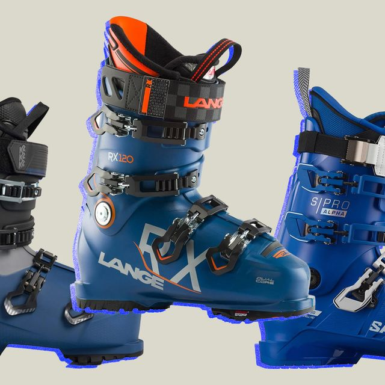

ApresMafia

Skiing is a sport that is loved by many throughout the United States and the world. For those of you who have not gotten the chance to go see this great sport in action, you are surely missing out. Whether you are a beginner looking to start or an expert looking to upgrade your equipment, this will serve as a guide to what you will need to be properly prepared for ski season.

The most important factor in skiing is having the proper equipment. This includes but isn’t limited to a winter-rated jacket, snow pants, a helmet, goggles, gloves, ski boots, and of course; skis. This may seem like only a few items, but the expenses for these items add up quickly. Because of this expense, I would recommend going on one of two paths:
First, you could rent equipment from a local shop. Many shops around ski resorts often have equipment that they can lease out to you. It usually costs around $100-200 for a day rental but if you are considering skiing only once then I would recommend going in this direction. Some shops carry full-season rentals that are much more cost-effective and you get to keep your equipment for the entire season rather than just one day. However, if you are committed to becoming a skier, I would go in another direction.
Instead of renting equipment for $100 every time you go up to the mountains, I would recommend purchasing all your own equipment. Yes, this is going to cost $1000-2000, but the benefits of buying your own equipment are unmatched.
Purchasing your gear will allow you to tailor it to your style. Items like your ski boots– which I would argue are the most important pieces of equipment– are customizable to the shape of your foot and rated with a flex index depending on your skiing style. Going to a store and trying on new boots will allow you to find something that comfortably fits the shape of your foot. This will be essential when you get to an actual ski resort because you will be standing on your feet all day. A small amount of discomfort will perpetually grow worse, so if you find a pair of comfortable boots, don’t cut off your circulation, and have proper flex for your skiing type, you will not have to worry about this piece of equipment ever again.
The next item that you will need to purchase is a pair of skis. There
are a ton of different manufacturers that build skis of different
lengths and widths, you need to make sure to find something that once
again fits with your skiing style. If you are more cautious, look for
a pair of skis that are between the height of your shoulder and chin
for maximum maneuverability while skiing. If you are a little more
experienced but not quite an expert, choose a pair of skis that are
roughly the height of your nose. This will ensure that you can still
maneuver these skis, but the longer length will help them stay more
stable and grant better performance at high speeds. Lastly, if you are
an expert skier who likes to ride fast, choose a ski that is around
the height of your forehead to give yourself maximum performance.
The next thing you need to determine is the snow quality that you will
be skiing on. For most people reading this, you will be skiing on
groomers at a ski resort. For this type of skiing, I would recommend a
ski with a waist width of 85-95 mm. This will give you the best
performance out of your skis and will allow you to carve easily on
groomers. If you are looking to get off the groomers and into the
woods, then I would grab a pair of skis that are 95-105 mm in the
waist. This will allow you to float on top of powder if there is any
in the woods, but also be able to carve effectively on groomers. Skis
with this width are perfect for all-mountain skiing, so pretty much
this width of the ski will be able to conquer everything a resort
throws at it. The last waist width you will need to consider is the
range of 105-120mm, and this width is for backcountry skiing with a
ton of powder and it allows you to easily float on top of fluffy snow.
Choosing the correct pair of skis will help make your skiing
experience better and make it easier to learn.
Once you have found your skis and boots, find a pair of bindings that will fit with your skis. You will be able to determine this by using bindings that are the same width or wider than the waist width of your skis. The bindings will keep your boots linked to the skis, so make sure to bring them to a local ski shop to make sure they are mounted properly. Choosing bindings with the correct DIN setting will allow your boot to separate from your ski when you fall. A local ski shop will help set your DIN setting correctly based on your height, weight, skier type, and age.
Once you have those three pieces of equipment, the next step is to find a helmet to protect your head on the slopes. Skiing is a dangerous sport where head injuries are possible, so wearing a helmet is essential for protecting yourself on the mountain. Usually, a helmet is made to protect you from small impacts. These helmets will be in the price range of $100-150 and are often the base model for what you will need. If you are putting yourself in situations where it's likely there could be a high impact on your head, I would recommend a helmet that costs around $200-250 because they usually come with extra technology to help protect your brain in the event of a crash.
Skiing is a winter sport and often you will find yourself skiing in
temperatures below 30 degrees. It is essential to find clothing that
will keep you warm for your entire ski day. This means choosing proper
outer layers as well as in layers to keep your body warm and prevent
frostbite. Choose a jacket and pants with a waterproof outer shell to
keep everything on the inside dry. Then layer up underneath to keep
your body temperature consistent. Different people require different
amounts of clothes for this step, so determine what you think you will
need. I would recommend wearing a tight, sporty base layer against
your skin as the compression will help keep your body warm and the
material will allow for moisture to escape. Then, add sweatpants and
sweaters as needed, or whatever you decide to use as your mid-layer.
Make sure you are comfortably warm, as being too warm will cause
moisture to build up inside your jacket and pants and inevitably make
you cold.
The last piece of clothing you will need is a pair of gloves or
mittens. Since these are on your outer layer, I would recommend
getting something waterproof. Gloves are the most likely piece of
equipment to get wet, and having waterproof ones will prevent your
hands from getting wet and becoming cold. For this piece of equipment,
I would recommend mittens because they keep your fingers together so
it is more likely your hands will stay warm.
 (m).jpg)
Choosing the correct ski goggles is pretty straightforward. There are two criteria that you need to follow. First, choose a pair of goggles where the foam around the edges makes complete contact with your face. Any gaps in the foam will allow wind to get in and bother your eyes. Second, take into account what the weather is that you will be skiing in. If it's going to be sunny often, choose a goggle with a dark lens to help protect your eyes from the harmful rays of the sun. If the location you are skiing in is likely to be more cloudy, a dark lens will make it hard to see the fine details of the snow in front of you leading to an increased chance of falling. For these conditions, I would recommend using a bright-colored, see-through lens. This type of lens will make your vision brighter and will allow you to see better in medium-light conditions than your own eyes.
The last thing you will need is a set of poles. The way you can find the right length is by flipping the poles over and holding them directly under the basket with the top of your hand touching the top of the basket. From this position, stand the poles up vertically in front of you with your elbow glued to the side of your body. You will know that the poles are the proper length if your elbow forms a right angle in this position.
Now that you have all your ski equipment, I would recommend purchasing
a ski bag to keep all of your equipment together and make it easier to
transport. It is easy to lose things at a ski resort, so keeping your
items in a bag will make it easier to prevent this. Bags come in all
different shapes and sizes, so choose something that will allow you to
carry everything besides your poles and skis.
The next piece of gear you will need is a good pair of ski socks. Ski
socks will keep your feet warm while also letting the moisture breathe
off of your feet. It may sound counterintuitive, but thinner socks
will keep your feet warmer because they don’t absorb as much moisture
and are less likely to restrict circulation in your feet.
If you have bad circulation, your feet and hands will likely get cold
while skiing. For this, I would recommend buying foot warmers for your
boots and hand warmers for your gloves. These warmers can be
single-use or battery-powered and will be sure to keep your
extremities warm even on the coldest of days.
The last piece of equipment I would recommend is a face mask. A face
mask will prevent the skin on your face from being exposed to the
cold, harsh winds that we often encounter while skiing. Face masks are
essential for preventing frostbite on extremely cold days.
Once you have purchased or rented all these pieces of equipment, you are officially ready to ski. Purchase a ticket and plan your drive to a ski resort near you. Ski resorts are often a great distance from where people typically live, so plan to go early to maximize your time on the mountain. Parking at ski resorts is usually free but remember that lunches at ski resorts are very expensive so I would always recommend packing your lunch and saving the money for apres ski at the bar.